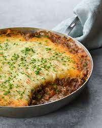

The Best Classic Shepherds Pie

So, this is how you spell it: Shepherds Pie. But, from doing a quick google search, it came to my attention that TONS of people think its Shepards Pie.
Honestly its not a big deal at all but the bitch I am stealing this from seems to think it is.
Really this is a common recipe that 4,000 other sites host so honestly just go to theirs because
Its going to taste better than mine.
Anyway, lets go to the recipe now. Below are the ingredients you will need. I put them
at the beginning so you dont have to read about my life story for no fucking reason.
- 2 tablespoons olive oil
- 1 cup chopped yellow onions
- 1 lb. 90% lean ground beef